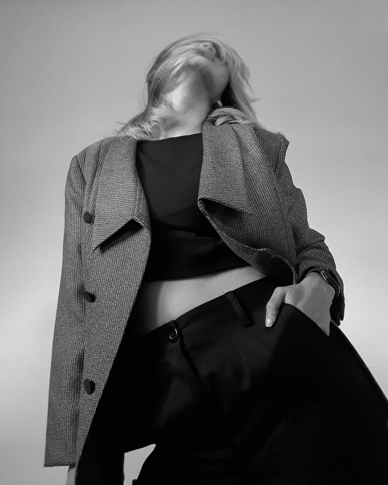
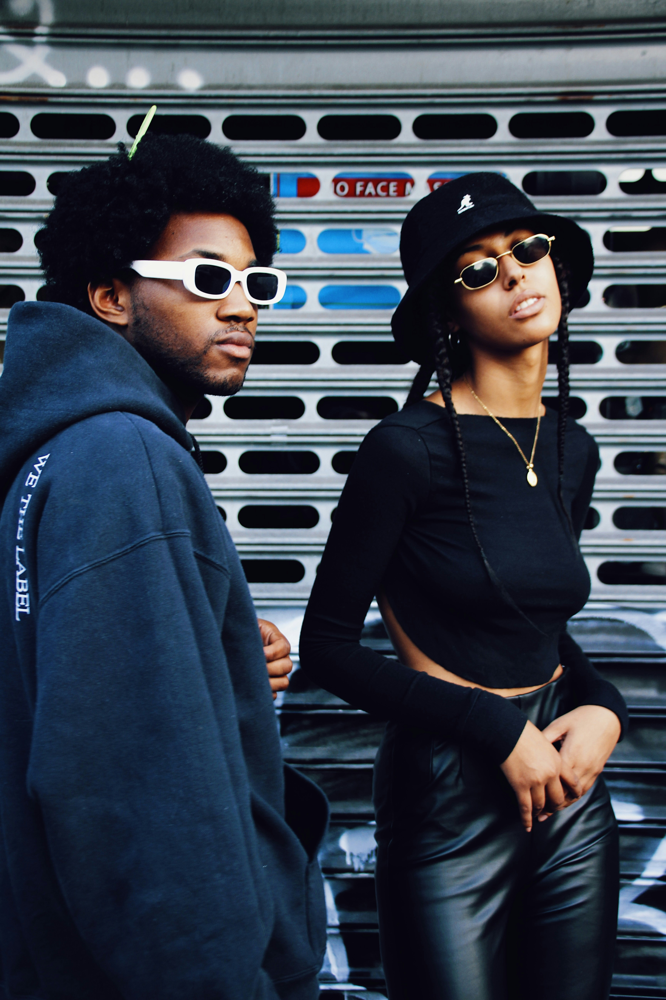
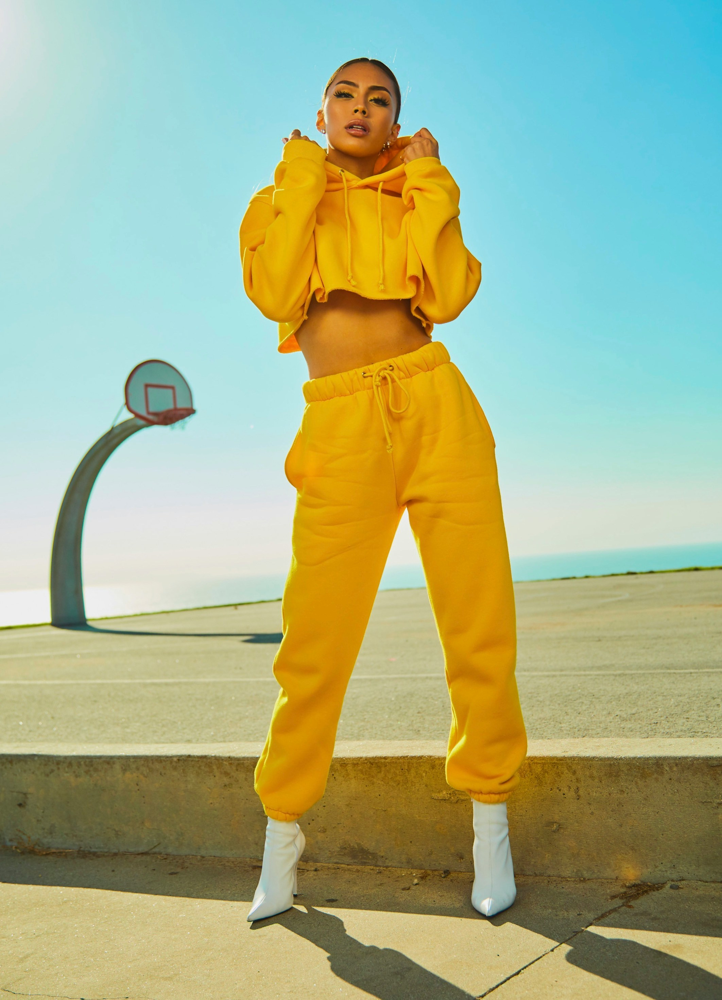

Soft Structure: The Season's Quiet Revolution
Designers are trading sharp edges for fluid silhouettes and a palette of warm neutrals.
By Amelia Hart · 6 min read
Designers are trading sharp edges for fluid silhouettes and a palette of warm neutrals.
By Amelia Hart · 6 min read

Style NotesInvest in fewer pieces, made to last, and let texture do the talking.
By Clara Whitfield · 4 min read

StreetWhat editors, buyers and models actually wore between the shows.
By Jonah Reyes · 5 min read
 Beauty
Beauty
A pared-back routine that puts skin health ahead of the next new product.
By Naomi Okafor · 3 min read
 Culture
Culture
A new generation of tailors on why made-to-measure is back in demand.
By Amelia Hart · 7 min read

ShoppingFrom the office to the weekend, the pieces worth buying this season.
By Clara Whitfield · 4 min read